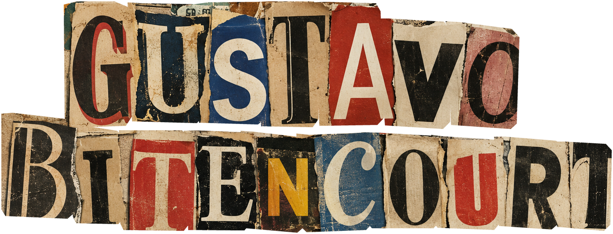

Meu nome é Gustavo Bitencourt. Sou diletante profissional, nasci em Curitiba (PR) e moro entre Curitiba e Piçarras (SC). Fiz Letras na UFPR e atuo constantemente em diversos campos artísticos há mais de 30 anos. Tenho na indisciplinaridade uma das principais características do meu trabalho.
Trabalho como ilustrador, designer gráfico, redator e tradutor, performer, ator, diretor de teatro, drag queen, crítico, editor, e compus trilhas para teatro, dança e vídeo.